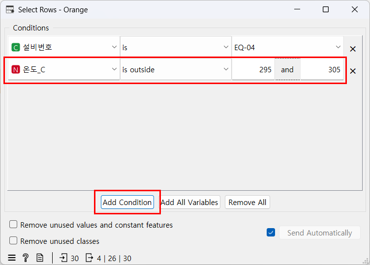
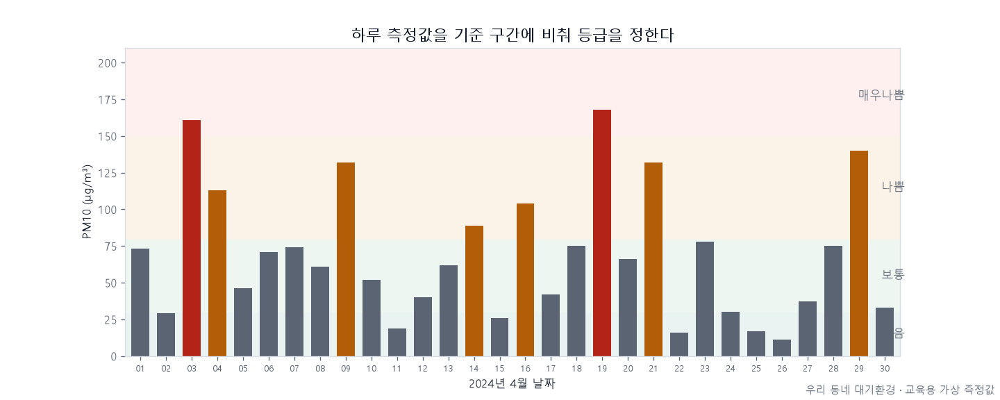
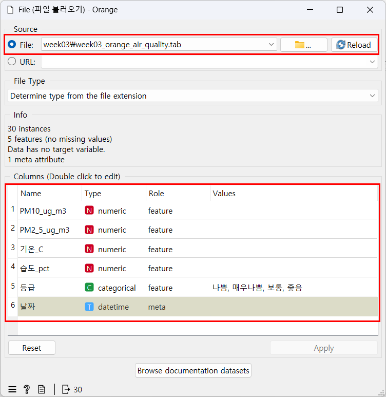
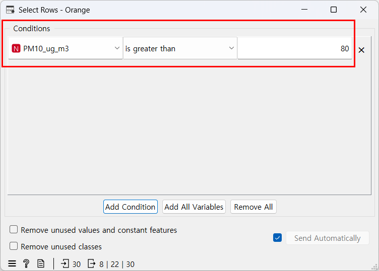
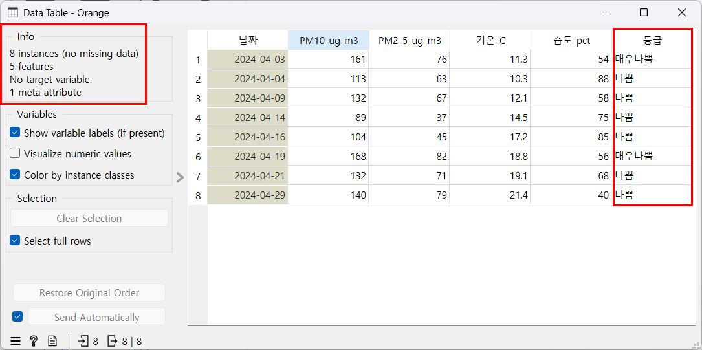
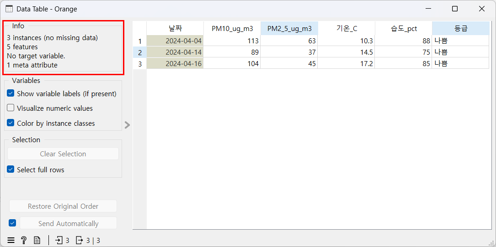
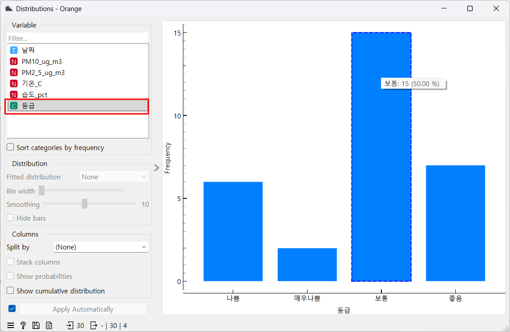
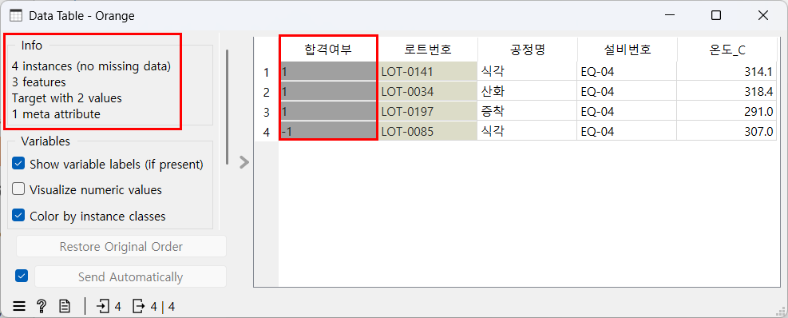

if, 체온 if/else. (노트북 1~2단계)오늘의 질문: "리스트에 담긴 여러 설비 정보를 하나씩 살펴보며, 조건에 맞는 것만 컴퓨터가 골라내게 할 수 있을까?"
오늘의 미션 — 기록 30건을 하나씩 보는 대신, 온도가 연습용 기준 안인지 자동으로 판정해 주는 작은 도우미를 만들자. 기준 밖 기록은 몇 건이고, 그중 실제 검사에서도 불합격인 기록은 몇 건일까?
「신입 데이터 담당자의 10일」 셋째 날. 이야기 속 공장과 기록은 모두 교육용 가상 데이터다.

PART 2에서 Orange로 직접 만들어 볼 조건 화면. 파이썬에서 if로 쓴 조건을 Orange에서는 이 창에 적는다.
if/else로 값이 범위 안인지 판정할 수 있다.for로 리스트의 값을 하나씩 꺼내 조건에 맞는 개수를 셀 수 있다.def와 return으로 판정 함수 하나를 만들어 쓸 수 있다.if는 판단, for는 되풀이, 함수는 판단 규칙에 붙인 이름이다. 이 셋이 4차시부터 쓰는 Pandas 조건 검색의 바탕이다.student = {"이름": "지민", "나이": 15, "반": 3}에서 print(student["혈액형"])을 실행하면 어떻게 될까?KeyError: '혈액형'이 난다. 딕셔너리에 없는 키(이름표)를 꺼냈기 때문이다. 오늘은 기록 한 건을 딕셔너리로 담고 record["온도_C"]처럼 키로 온도를 꺼낸다. 키는 열 이름과 글자 하나까지 같아야 한다.비교 연산자는 두 값을 비교해 True(참) 또는 False(거짓)를 돌려준다.
| 기호 | 뜻 | 예 |
|---|---|---|
> / < | 크다 / 작다 | score > 80 |
>= / <= | 크거나 같다(이상) / 작거나 같다(이하) | score <= 80 |
== | 같은가? | subject == "수학" |
!= | 다른가? | subject != "수학" |
=는 1차시에 배운 "저장하라", ==는 "같은가?"라는 질문이다.
if는 조건이 True일 때만 그 아래 들여 쓴 줄을 실행한다. 들여 쓰지 않은 줄은 조건과 상관없이 실행된다.
score = 85
subject = "수학"
print(score > 80)
print(score <= 80)
print(subject == "수학")
print(subject != "수학")
if score > 80:
print("80점을 넘었습니다!")
print("채점 끝")True False True False 80점을 넘었습니다! 채점 끝
if 줄 끝에는 콜론 :을 붙인다.AI 답은 틀릴 수 있으니 확인 포인트와 비교하세요. 개인정보·실제 회사 데이터는 넣지 마세요.
검색어 파이썬 들여쓰기 이유
파이썬을 처음 배우는 사람에게 if 아래 줄을 왜 들여 써야 하는지 3문장으로 설명해줘. 들여쓰기를 빼먹으면 어떤 오류가 나는지도 알려줘.if 안의 코드인지 구분한다"는 내용과, 들여쓰기를 빼먹으면 IndentationError가 난다는 내용이 들어 있다. 스페이스 4칸을 흔히 쓴다는 설명이 붙을 수 있다.조건이 참이면 if 아래를, 거짓이면 else 아래를 실행한다. 36.0 <= body_temp <= 37.5는 "36.0 이상이고 37.5 이하인가?"를 한 번에 묻는다. 범위 안인지 묻는 모양이다.
body_temp = 36.5
if 36.0 <= body_temp <= 37.5:
print("정상 체온입니다.")
else:
print("다시 재 보세요.")정상 체온입니다.
else 줄에도 콜론을 붙이고, else는 if와 같은 위치에서 시작한다.
for score in scores:는 "리스트 scores에서 값을 하나씩 꺼내 score라는 이름으로 부르며, 아래 줄을 되풀이하라"는 뜻이다.
개수를 세려면 for 바깥에서 세는 변수를 0으로 시작하고, 조건에 맞을 때마다 1씩 늘린다.
scores = [72, 85, 90, 64, 88]
for score in scores:
print(score)
pass_count = 0
for score in scores:
if score >= 80:
pass_count = pass_count + 1
print(f"80점 이상인 학생은 {pass_count}명입니다.")72 85 90 64 88 80점 이상인 학생은 3명입니다.
pass_count = pass_count + 1은 "지금 값에 1을 더해 다시 저장하라"는 뜻이다. 같은 코드의 for 안에 print 한 줄을 넣으면, 한 바퀴 돌 때마다 pass_count가 어떻게 바뀌는지 보인다.
pass_count = 0
for score in scores:
if score >= 80:
pass_count = pass_count + 1
print(f"{score}점 | 80점 이상? {score >= 80} | pass_count = {pass_count}")72점 | 80점 이상? False | pass_count = 0 85점 | 80점 이상? True | pass_count = 1 90점 | 80점 이상? True | pass_count = 2 64점 | 80점 이상? False | pass_count = 2 88점 | 80점 이상? True | pass_count = 3
for 안에 두면 바퀴마다 0으로 돌아간다.print는 들여 쓰지 않았다. 그래서 다 센 뒤 한 번만 출력된다.def로 규칙에 이름을 붙이고, return으로 결과를 돌려준다. 정의만 하면 아무것도 실행되지 않는다. 이름을 불러야 실행된다.
def judge_score(point):
if point >= 80:
return "합격"
else:
return "불합격"
print(judge_score(85))
print(judge_score(64))합격 불합격
point)은 함수에 넣어 주는 값을 받는 자리다. judge_score(85)라고 부르면 85가 point에 들어가 함수 안에서 쓰이고, judge_score(64)라고 부르면 이번에는 64가 들어간다.리스트에서 하나씩 꺼내(for) 함수로 판정하고, 그 결과로 개수를 센다. 함수의 결과를 "불합격"과 비교할 때는 ==를 쓴다.
for score in scores:
result = judge_score(score)
print(f"{score}점 → {result}")
fail_count = 0
for score in scores:
if judge_score(score) == "불합격":
fail_count = fail_count + 1
print(f"불합격 판정을 받은 학생: {fail_count}명")72점 → 불합격 85점 → 합격 90점 → 합격 64점 → 불합격 88점 → 합격 불합격 판정을 받은 학생: 2명
for가 꺼낸 score를 함수에 넣는다. 함수 안에서는 그 값이 point라는 이름으로 쓰인다.if 안에 if를 한 번 더 쓰면(한 단계 더 들여 쓰기) 바깥 조건과 안쪽 조건을 둘 다 만족할 때만 실행된다. 실습지 문제 3-3에서 이 모양을 쓴다.오늘 반도체 데이터는 설비 기록표 week03_python_basics_2.csv(30행, 교육용 가상 데이터)다. 공정 지도 ②~⑤와 세정에서 남긴 기록이다. 오늘 파이썬은 표 파일을 직접 읽지 않는다(4차시에 배운다). 그래서 노트북에는 표에서 옮겨 적은 값이 딕셔너리의 리스트로 들어 있다. (노트북 6단계)
로트번호, 공정명, 설비번호, 온도_C, 합격여부. _C = 섭씨 도. 노트북 딕셔너리에는 오늘 쓰는 네 열(공정명 제외)만 옮겼다.합격여부는 그 공정을 마친 뒤 검사에서 나온 실제 결과로, 기록(행)마다 따로 매긴 값이다. 1 = 합격, -1 = 불합격.합격여부 — 공장 검사에서 나온 실제 결과(1 / -1). 온도만으로 정해진 값이 아니다.이 절에서는 설비 EQ-04의 기록 8건을 본다. 기록 30건 전체는 실습에서 직접 판정한다.
기록 한 건 = 딕셔너리 하나(2차시). 그것을 리스트에 여러 개 담으면 표와 같은 모양이 된다. 몇 건이 담겼을까?
eq04_records = [
{"로트번호": "LOT-0196", "설비번호": "EQ-04", "온도_C": 302.6, "합격여부": 1},
{"로트번호": "LOT-0141", "설비번호": "EQ-04", "온도_C": 314.1, "합격여부": 1},
{"로트번호": "LOT-0034", "설비번호": "EQ-04", "온도_C": 318.4, "합격여부": 1},
{"로트번호": "LOT-0110", "설비번호": "EQ-04", "온도_C": 303.0, "합격여부": 1},
{"로트번호": "LOT-0031", "설비번호": "EQ-04", "온도_C": 301.8, "합격여부": 1},
{"로트번호": "LOT-0004", "설비번호": "EQ-04", "온도_C": 295.8, "합격여부": 1},
{"로트번호": "LOT-0197", "설비번호": "EQ-04", "온도_C": 291.0, "합격여부": 1},
{"로트번호": "LOT-0085", "설비번호": "EQ-04", "온도_C": 307.0, "합격여부": -1},
]
print(len(eq04_records))8
공장 말로 읽기: 한 줄이 기록 한 건이다. 딕셔너리의 키("온도_C" 등)는 표의 열 이름과 같다.
체온 판정과 같은 모양으로 기록마다 295~305도 안인지 판정하고, 범위 밖이면 실제 검사 결과(합격여부)도 함께 출력하면? 기록 한 건 record에서 온도는 record["온도_C"]로 꺼낸다.
out_count = 0
for record in eq04_records:
if 295 <= record["온도_C"] <= 305:
print(record["로트번호"], record["온도_C"], "범위 안")
else:
print(record["로트번호"], record["온도_C"], "범위 밖 / 합격여부", record["합격여부"])
out_count = out_count + 1
print(f"EQ-04 기록 8건 중 범위 밖은 {out_count}건입니다.")LOT-0196 302.6 범위 안 LOT-0141 314.1 범위 밖 / 합격여부 1 LOT-0034 318.4 범위 밖 / 합격여부 1 LOT-0110 303.0 범위 안 LOT-0031 301.8 범위 안 LOT-0004 295.8 범위 안 LOT-0197 291.0 범위 밖 / 합격여부 1 LOT-0085 307.0 범위 밖 / 합격여부 -1 EQ-04 기록 8건 중 범위 밖은 4건입니다.
공장 말로 읽기: EQ-04는 8건 중 4건이 연습용 기준 밖이다. 그런데 그 4건 중 실제 불합격(-1)은 LOT-0085 한 건뿐이고, 3건은 합격(1)이다. 기준 밖 기록은 "불량"이 아니라 "살펴볼 후보"다.
AI 답은 틀릴 수 있으니 확인 포인트와 비교하세요. 개인정보·실제 회사 데이터는 넣지 마세요.
검색어 공정 규격 스펙 뜻
반도체를 처음 배우는 사람에게 공장에서 말하는 '공정 규격(스펙)'이 무엇인지 피자 가게 레시피의 오븐 온도 범위에 비유해서 3문장으로 설명해줘. 규격을 벗어난 기록은 어떻게 다루는지도 알려줘.검색어 온도만 보고 불량 판단 문제점
피자 가게에서 오븐 온도 하나만 보고 피자가 잘 구워졌는지 판단하면 왜 틀릴 수 있는지, 반도체 공장에서 공정 온도 하나만 보고 합격·불합격을 판단하는 일에 빗대어 3문장으로 설명해줘.학생용 노트북을 위에서 아래로 실행하며 ____를 채운다. 7단계 문제 번호는 실습지 문제 1~3과 같다.
if, 체온 if/else. (노트북 1~2단계)for로 80점 이상 세기, judge_score 함수, 함수 + for로 불합격 세기. (노트북 3~5단계)check_range로 기록 30건 판정. (노트북 7단계, 실습지 문제 1~3)scores와 4단계의 judge_score를 쓴다. 위 셀을 건너뛰면 NameError가 난다. 문제 3도 함수 셀을 먼저 채우고 실행해야 한다. 안 그러면 아래 셀에서 NameError: name 'check_range' is not defined가 난다 — 철자가 아니라 위 셀부터 확인한다.pass_count를 그대로 베끼거나, 문제 3에서 함수에 temp를 넣으면(문제 2의 마지막 값이 남아 있다) 숫자가 틀어진다. 함수에서 return을 빼먹으면 None이 나오고 개수가 0건이 된다.____는 빈칸 표시일 뿐이다. 밑줄 개수와 상관없이 지우고 필요한 만큼(숫자 하나든 식 전체든) 쓴다. 채우지 않고 실행하면 NameError: name '____' is not defined가 나고, 줄 맨 앞이 빈칸이면 SyntaxError가 난다.파이썬에서는 for와 if로 한 건씩 판정했다. Orange의 Select Rows는 조건을 창에 적으면 맞는 행만 골라 준다.
실습 환경에 준비된 파일을 그대로 쓴다. Orange 설치와 첫 실행은 설치 안내의 STEP 06에 있다(Orange 3.35 기준).
| 말 | 뜻 |
|---|---|
| 캔버스 | 위젯을 놓고 선으로 잇는 가운데 하얀 작업판 |
| 위젯 | 한 가지 일을 하는 기능 상자. 더블클릭하면 자기 창이 열린다 |
워크플로(.ows) | 캔버스에 놓은 위젯과 연결을 통째로 저장한 파일 |
.tab | Orange가 읽는 표 파일. CSV와 내용은 같고, 열마다 종류·역할이 적혀 있다 |
| 툴팁 | 마우스를 올리고 잠시 기다리면 뜨는 작은 설명 상자 |
| 위젯(화면 이름) | 어느 묶음에 있나 | 한국어 뜻 | 오늘 하는 일 |
|---|---|---|---|
File | Data | 파일 불러오기 | 표 파일을 연다. _start.ows에 이미 들어 있다 |
Select Rows | Transform | 행 고르기 | 오늘 새 위젯. 조건에 맞는 행만 골라 다음 위젯으로 보낸다 |
Data Table | Data | 표 보기 | Select Rows가 고른 행을 펼쳐 보고, 몇 행인지 센다 |
Distributions | Visualize | 분포 막대 | 한 열의 값마다 몇 개인지 막대로 본다(1차시에 써 봤다) |
×로 지운다.is greater than = 보다 크다(초과, 80 자체는 빠진다) · is at least = 이상 · is below = 보다 작다 · is between = 두 값 사이 · is outside = 두 값 바깥. 값 칸이 둘이면 왼쪽에 작은 값, 오른쪽에 큰 값을 넣는다.설비번호 등)은 is를 고르고 목록에서 값을 고른다.가상의 우리 동네 측정소가 2024년 4월 한 달(30일) 동안 매일 잰 대기환경 기록이다(30행, 교육용 가상 측정값). 열은 날짜, PM10_ug_m3(미세먼지), PM2_5_ug_m3(초미세먼지), 기온_C, 습도_pct, 등급이다. _ug_m3 = 공기 1세제곱미터 안에 든 먼지의 무게(마이크로그램), _pct = 퍼센트.
등급은 PM10 값을 기준 구간에 비춰 붙인 판정이다. 아래 그림처럼 하루하루의 값이 어느 칸에 들어가는지로 정한다.

4월 하루하루의 PM10을 기준 구간(좋음 0~30 · 보통 31~80 · 나쁨 81~150 · 매우나쁨 151 이상)에 비춰 등급을 정한다(교육용 가상 측정값).
AI 답은 틀릴 수 있으니 확인 포인트와 비교하세요. 개인정보·실제 회사 데이터는 넣지 마세요.
검색어 미세먼지 PM10 등급 기준
우리나라 미세먼지 예보에서 PM10 농도로 좋음·보통·나쁨·매우나쁨 등급을 나누는 기준을 표로 알려줘. PM10과 PM2.5가 무엇이 다른지도 한 줄로 설명해줘.orange3/week03/week03_1_air_start.ows를 연다. File 위젯을 더블클릭해 week03_orange_air_quality.tab이 들어왔는지 확인하고 창을 닫는다.
Select Rows를 끌어 와 File과 잇고 더블클릭한다. 이미 있는 조건 한 줄을 PM10_ug_m3 · is greater than · 80으로 바꾼다.
Data Table을 잇고 더블클릭한다. 왼쪽 Info 칸에서 고른 날이 며칠인지 세고, 등급 열을 본다.
등급은 모두 나쁨(6일) 또는 매우나쁨(2일)이다. 등급은 PM10 값으로 정한 것이라 "PM10이 80보다 큰가?" 조건과 딱 맞는다. 반도체 표의 합격여부는 온도로 정한 값이 아니라서 이렇게 딱 맞지 않는다 — 아래 반도체 데이터에서 직접 확인한다.
습도_pct · is greater than · 70으로 정한다. Data Table의 행 수가 어떻게 바뀌는지 본다.
Distributions를 File에 잇고 Variable 목록에서 등급을 클릭한다. 막대마다 마우스를 올려 개수를 읽는다. 나쁨과 매우나쁨을 더하면 Select Rows가 고른 날 수와 같을까?
PART 1에서 딕셔너리의 리스트로 옮겨 적은 그 표다. 공정 지도 ②~⑤와 세정에서 남긴 기록이고, 설비 4대가 여러 공정 기록을 함께 남겼다(교육용 가상 기록). 오늘은 PART 1 확인 2처럼 설비 EQ-04의 기록에서 연습용 기준 밖 기록을 고른다.
orange3/week03/week03_2_records_start.ows를 연다. File을 더블클릭해 week03_python_basics_2.tab이 들어왔는지 확인한다.Select Rows를 잇고 더블클릭한다. 이미 있는 조건 한 줄을 설비번호 · is · EQ-04로 바꾼다. Select Rows에 Data Table을 이어 몇 행인지 센다.온도_C · is outside · 왼쪽 칸 295, 오른쪽 칸 305로 정한다. Data Table의 행 수와 합격여부 열을 본다.
합격여부는 1이 3개, -1이 1개다. 연습용 기준 밖이라고 모두 불합격은 아니다.합격여부와 참고 열 로트번호가 앞에 온다.for+if로 센 EQ-04의 범위 밖 4건과 Select Rows가 남긴 4행이 같다. 조건은 같고 손만 다르다 — 파이썬은 코드로, Orange는 창에 조건을 적어서 고른다.
week03_1_air_done.ows, week03_2_records_done.ows를 열면 완성된 연결과 조건을 볼 수 있다. File에 빨간 글씨가 보이면 키트 폴더 구조가 바뀌지 않았는지 확인한다. is outside 대신 is between을 고르면 범위 안 기록이 남는다. 값 두 칸의 순서가 바뀌거나(왼쪽 305, 오른쪽 295) 한 칸이 비면 오류 없이 30행이 그대로 남는다.
3차시 실습지를 연다. 다섯 문제를 혼자 풀고, 정답은 접힌 상자를 열어 확인한다.
check_range로 기록 30건 전체를 판정한다.if 아래를, 거짓이면 else 아래를 실행한다.if 295 <= temperature <= 305:=를 쓰기 쉽다. "같은가?"는 ==다.for record in records:for 안에서 0으로 만들면 매번 처음으로 돌아간다. 바깥에서 한 번만 0으로 시작한다.return으로 결과를 돌려준다.check_range(312.6) → "범위 밖"return을 빼도 오류가 나지 않는다. 대신 None(아무것도 없음)이 돌아온다.| 파일 | 크기 | 쓰는 곳 |
|---|---|---|
data/weekly/week03/week03_python_basics_2.csv | 30행 5열 | 설비 기록표(공정 지도 ②~⑤와 세정). 파이썬 확인 1·2와 실습(값을 옮겨 적은 리스트), Orange 반도체 데이터(orange/ 폴더의 같은 이름 .tab) |
data/weekly/week03/week03_orange_air_quality.csv | 30행 6열 | Orange 워밍업 — 우리 동네 대기환경 |
두 파일 모두 교육용 가상 데이터다. 열 설명은 데이터 설명서에 있다. 표를 코드로 직접 여는 것은 4차시부터다.
if score > 80처럼 줄 끝 :이 없으면 SyntaxError: expected ':'가 난다. if·else·for·def 줄 끝에는 콜론을 붙인다.
if 아래 줄을 들여 쓰지 않으면 IndentationError: expected an indented block after 'if' statement on line 2처럼 나온다(줄 번호는 코드마다 다르다). 들여쓰기가 들쭉날쭉하면 IndentationError: unexpected indent가 난다. 스페이스 4칸으로 맞춘다.
if score = 80:이라고 쓰면 SyntaxError: invalid syntax. Maybe you meant '==' or ':=' instead of '='?가 난다. "같은가?"는 ==다.
check_range(record)처럼 딕셔너리를 통째로 넣으면 TypeError: '<=' not supported between instances of 'int' and 'dict'가 난다. 숫자(295)와 딕셔너리는 크기를 비교할 수 없다는 뜻이다. 온도만 꺼내 check_range(record["온도_C"])로 넣는다. "범위 밖"의 따옴표를 빼먹으면 SyntaxError가 난다(따옴표가 없으면 글자 사이 빈칸을 코드로 읽는다).
합격여부)는 다르다 — 기준 밖은 '살펴볼 후보'다. 그래서 온도 하나로 합격·불합격을 정하지 않는다.if/else로 판정하고, for로 개수를 세고, 판정 규칙을 함수 check_range로 만들었다.-1)인 기록은 3건이다. 나머지 9건은 기준 밖인데도 합격이었다. 실습지 문제 3·4를 푼 뒤 열어 본다.나머지 문항은 실습지와 수업 뒤 퀴즈로 복습한다.
body_temp = 36.5일 때 아래 코드의 출력은? if 36.0 <= body_temp <= 37.5: → print("정상 체온입니다."), else: → print("다시 재 보세요.")if와 else 중 한쪽만 실행된다.check_range가 "범위 밖"이라고 판정한 기록은 실제 검사(합격여부)에서도 모두 불합격이다.ChatGPT에 이렇게 물어봤다. (노트북 8단계)
records 리스트(딕셔너리마다 "온도_C" 키가 있음)에서 check_range 함수가 "범위 밖"을 돌려주는 기록만 골라, 305보다 높은 것과 295보다 낮은 것이 각각 몇 건인지 세는 짧은 파이썬 코드를 만들어 줘. if와 for만 써 줘.아래는 받은 코드의 예시다. 7단계 문제 3을 마친 뒤 실행하고, 높음 + 낮음이 문제 3에서 센 개수와 같은지 맞춰 본다.
# 문제 3을 푼 뒤 실행하세요.
high = 0
low = 0
for record in records:
temp = record["온도_C"]
if check_range(temp) == "범위 밖":
if temp > 305:
high = high + 1
if temp < 295:
low = low + 1
print(f"높음 {high}건, 낮음 {low}건")높음 8건, 낮음 4건
if score >= 80:을 if score >= 85:로 바꿔 다시 실행하고, 80점 이상이던 학생 수가 몇 명으로 바뀌는지 확인한다.
#으로 시작하는 주석 줄로, "기준 밖 기록이 왜 곧바로 불량은 아닌지"를 피자 가게 비유로 두세 줄 적는다(예: # 오븐 온도가 범위를 조금 벗어나도 피자는 잘 구워질 수 있다.).
for로 하나씩 꺼내 check_range로 판정해 센다. Orange에서는 Select Rows에 같은 조건을 적는다.내일의 미션 — 기록 100건짜리 CSV 파일을 받았다. EQ-02에서 불합격이 몇 건인지 찾아 보고하자.
오늘은 for와 if 여러 줄로 조건에 맞는 기록을 골랐다. 다음에는 Pandas로 CSV 파일을 직접 읽고, 같은 일을 한 줄로 한다. Orange에서는 오늘 쓴 Select Rows에 열을 고르는 Select Columns를 더한다.